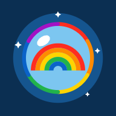
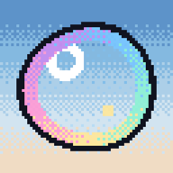

What I'm building
Spoiler-free chat
GameTimeTalk→
A group chat for watching football on a delay. Start a room for a game, send your friends the link, and every comment waits at the moment in the game it was written — so whoever is running behind never gets spoiled. Free, no accounts, works on a phone. Still a beta.
gametimetalk.com
Fantasy football
EBAAPL→
A web app for a 16-person NCAA football pick-em league. Picks against the spread, standings that keep themselves current, and tiebreakers that resolve on their own — replacing a spreadsheet and a separate picks site.
ebaapl.eriksheridan.com

Kid designed, dad approved.
Kitty Unicorn Dolphin Rider→
A browser game designed by a seven-year-old. Ride a dolphin across the ocean, leap for donuts and rainbows, and dodge the occasional jellyfish. Every bit of the art is drawn in code — no images at all — so it runs on anything and works with no internet.
kudr.eriksheridan.com

Pixel game
Bubble→
A pixel-art game about blowing a bubble and riding the wind down the street. Hold longer for a bigger bubble — the big ones drift and forgive, the small ones drop fast.
bubble.eriksheridan.com
Game ranker
Save State→
Pick a top three for every era of video games, from the arcade age to right now, then cut the winners down to one all-time three. 611 games to choose from, write-ins for anything missing, and it remembers where you left off.
eriksheridan.com/games.html